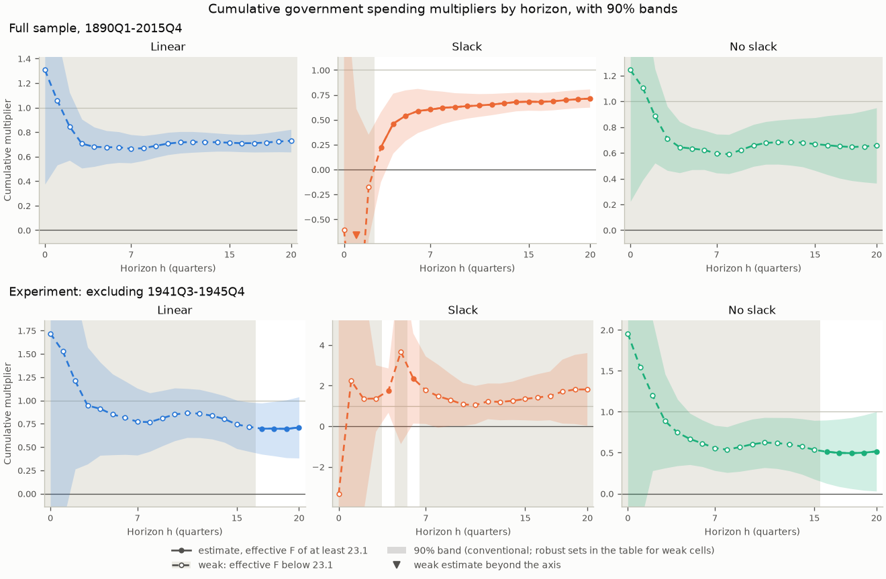

🇬🇧 English · 🇪🇸 Español
Your first fiscal brief: the spending multiplier, with and without slack
This page walks through one complete fiscal policy question on public data. When the US government buys an extra dollar of goods and services, how much does GDP rise over two and four years, and is the answer different when the economy has slack? The brief estimates the one-step local projections of Ramey and Zubairy (2018) on their quarterly US data for 1890-2015, which ship with puremacro, with military spending news as the instrument. It reports which of its numbers the instrument can support, repeats the estimates without World War II, shows the two calls that run on your own data, and states what the numbers do not say. Nothing needs to be downloaded besides the package.
1. Install
You need Python 3.11 or later. The brief, and the cumulative=True option of
the local projections it uses, are new after puremacro 6.1.0 (see the
Unreleased section of the changelog). You need a release that includes them,
or a source checkout:
python -m pip install puremacro # a release after 6.1.0
python -m pip install . # or, from a source checkout
2. Run
One command runs the brief and writes its tables, figure and record:
The same run from Python:
from puremacro.examples.first_brief_fiscal import run_brief, summary_text
study = run_brief("fiscal_brief")
print(summary_text(study["record"]))
The output directory holds headline.{md,csv,tex} (the tables and readings
below), paths.csv (every horizon from 0 to 20), multipliers.png,
headline.json (the record behind this page) and manifest.json (package
and library versions, the data file's citation and SHA-256, the
specification, warnings, timings and the environment). Options:
--exclude START:END adds the experiment of section 4, --output DIR sets
the directory (default fiscal_brief) and --lang en|es the language. With
the experiment, the whole command took about 2.3 s of wall time on an Apple
M3 Pro: 0.5 s to compute the estimates, 0.4 s to write the outputs, and the
rest to start Python and import the packages.
3. Preview: the multipliers at two and four years
The multiplier at horizon h is the extra GDP summed over the quarters t to t+h, per dollar of extra government purchases summed over the same quarters. Two and four years are h = 7 and h = 15, the 8- and 16-quarter windows of Ramey and Zubairy's Table 1. Each multiplier is estimated in one step: the window sum of GDP is regressed on the window sum of purchases, instrumented by the military news shock (Ramey 2011), with four lags of GDP, purchases and news as controls. Slack means that the unemployment rate in the previous quarter was at least 6.5%; with slack and without it, every coefficient is estimated separately. Bands are 90%, with HAC variances on h + 1 lags.
A cell is weak when its effective F, the strength of the instrument in that cell, is below 23.1, the cutoff of Montiel Olea and Pflueger (2013) for one instrument. The conventional band of a weak cell is unreliable, so the brief shows a weak cell by its weak-instrument-robust Anderson-Rubin (1949) 90% set, marked †, and never by its point estimate. The table and the reading below are the frozen output of the default run.
| Multiplier | 2 years (h = 7) | Effective F | 4 years (h = 15) | Effective F |
|---|---|---|---|---|
| Linear | [0.57, 0.83] † | 16.0 | [0.65, 0.81] † | 12.0 |
| Slack | 0.60 [0.41, 0.79] | 210.2 | 0.68 [0.59, 0.77] | 105.8 |
| No slack | [0.44, 0.82] † | 7.3 | [0.40, 0.89] † | 10.8 |
| Slack minus no slack | not reliable | not reliable |
Estimate [90% band]. The difference is reported only where neither regime is weak. † effective F below 23.1: the Anderson-Rubin set is shown instead of the estimate.

In the figure, solid lines and filled dots mark the horizons where the instrument clears the cutoff. Dashed lines, hollow dots and grey shading mark the weak horizons: there the line is drawn for reference only, and the Anderson-Rubin set is the number to quote. The top row is the full sample; the bottom row is the experiment of section 4.
Multipliers are dollars of GDP per dollar of government purchases, both cumulated over the horizon. Linear: weak at 2 years (effective F 16.0, cutoff 23.1), with a weak-instrument-robust 90% set of 0.57 to 0.83; weak at 4 years (effective F 12.0, cutoff 23.1), with a weak-instrument-robust 90% set of 0.65 to 0.81. Slack: 0.60 at 2 years (90% band 0.41 to 0.79); 0.68 at 4 years (90% band 0.59 to 0.77). No slack: weak at 2 years (effective F 7.3, cutoff 23.1), with a weak-instrument-robust 90% set of 0.44 to 0.82; weak at 4 years (effective F 10.8, cutoff 23.1), with a weak-instrument-robust 90% set of 0.40 to 0.89. The comparison of the multipliers with and without slack is not reliable at either horizon, because at least one regime is weak at each. Slack: one quarter, 1941Q4, carries 52% of the instrument's residual variation at both horizons. No slack: one quarter, 1950Q3, carries 36% of the instrument's residual variation at both horizons.
Read it this way: in the full sample, every band and every robust set lies between 0 and 1, with slack and without. At 90%, the data rule out both a multiplier of zero and a multiplier of one at two and four years: an extra dollar of purchases came with less than a dollar of extra GDP, so the rest of GDP (private spending and net exports) fell as purchases rose. The instrument is strong only with slack, from h = 3 on. In the linear model and without slack it stays below the cutoff at every horizon, so the brief cannot test whether slack changes the multiplier. With slack, one quarter, 1941Q4, when the United States entered World War II, carries about half of the instrument's residual variation, which is why the next section removes the war.
4. One experiment: without World War II
python -m puremacro.examples.first_brief_fiscal --exclude 1941Q3:1945Q4 --output fiscal_brief_no_war
World War II is the largest spending episode in the data, and its news
includes the largest shock in the sample, in 1941Q4. Ramey and Zubairy (2018,
p. 867) exclude 1941Q3-1945Q4: "we exclude observations when either the
dependent variable, the shock, or the lagged control variables occur in the
period". The brief applies the same rule. GDP, purchases and news become
missing in the period, every row is kept, the lag controls are rebuilt from
the masked series, and the window sums carry the gap. A quarter therefore
drops when its window, its shock or one of its lags touches the war: at
h = 7, every quarter from 1939Q4 to 1946Q4. Both quarters named in
--exclude are excluded.
Beside each regime's numbers, the reading reports a concentration diagnostic. On the rows a regime uses at a headline horizon, the news shock is regressed on a constant and the controls. The diagnostic is the largest single quarter's share of the squared residuals, with its date, and it is reported when the share is at least 25%. With normally distributed residuals and regime samples of these sizes (153 to 313 quarters), the largest quarter carries more than 10% in fewer than one sample in a hundred. A share of 25% or more therefore means that one episode carries much of the variation that identifies the regime's multiplier.
| Multiplier | 2 years (h = 7) | Effective F | 4 years (h = 15) | Effective F |
|---|---|---|---|---|
| Linear | [0.54, 2.04] † | 4.8 | [0.50, 1.07] † | 19.6 |
| Slack | [0.07, 3.61] † | 20.8 | (-∞, -55.98] ∪ [0.56, ∞) † | 3.2 |
| No slack | [0.25, 1.00] † | 5.7 | [0.18, 0.90] † | 22.3 |
| Slack minus no slack | not reliable | not reliable |
Estimate [90% band]. The difference is reported only where neither regime is weak. † effective F below 23.1: the Anderson-Rubin set is shown instead of the estimate.
Excluding 1941Q3-1945Q4: every quarter whose window, shock or lags touch the period is dropped, as Ramey and Zubairy do for World War II. Multipliers are dollars of GDP per dollar of government purchases, both cumulated over the horizon. Linear: weak at 2 years (effective F 4.8, cutoff 23.1), with a weak-instrument-robust 90% set of 0.54 to 2.04; weak at 4 years (effective F 19.6, cutoff 23.1), with a weak-instrument-robust 90% set of 0.50 to 1.07. Slack: weak at 2 years (effective F 20.8, cutoff 23.1), with a weak-instrument-robust 90% set of 0.07 to 3.61; weak at 4 years (effective F 3.2, cutoff 23.1), and its weak-instrument-robust 90% set is unbounded: the data cannot bound it. No slack: weak at 2 years (effective F 5.7, cutoff 23.1), with a weak-instrument-robust 90% set of 0.25 to 1.00; weak at 4 years (effective F 22.3, cutoff 23.1), with a weak-instrument-robust 90% set of 0.18 to 0.90. The comparison of the multipliers with and without slack is not reliable at either horizon, because at least one regime is weak at each. Slack: one quarter, 1961Q2, carries 41% of the instrument's residual variation at 2 years and 48% at 4 years. No slack: one quarter, 1950Q3, carries 49% of the instrument's residual variation at both horizons. No headline estimate clears the cutoff in this sample, so none is compared with the full sample. Ramey and Zubairy's Table 3 values without World War II are three-step estimates (summed impulse responses); the brief's are one-step, so the two need not match.
Read it this way: without the war, no headline cell clears the cutoff, so every number in the table is a weak-instrument-robust set, and most sets are much wider than in the full sample. With slack at four years, the data cannot bound the multiplier at all. Ramey and Zubairy (2018, p. 876) also find that without the war all their instrument sets appear weak in the high-unemployment state beyond two years. These sets cannot show that the multiplier is larger with slack once the war is excluded, and the identification again leans on single episodes: 1961Q2 with slack and 1950Q3, the Korean War buildup, without slack.
5. Your own data
The brief is two calls to puremacro's local projections with
cumulative=True. The block below makes them on the bundled data exactly as
you would on your own quarterly frame: replace df with yours. It also
excludes a period by Ramey and Zubairy's rule.
from puremacro.examples.ramey_zubairy_2018_multipliers import RZ_CONTROLS, load_rz_data
from puremacro.lp import lp_iv, lp_state_dep_iv
df = load_rz_data() # quarterly, 1890Q1-2015Q4, every row kept
# Excluding a period by Ramey and Zubairy's rule: y, g and the instrument become
# NaN in 1941Q3-1945Q4, the rows stay, and every lag column is rebuilt.
no_war = df.drop(columns=["cumy", "cumg"]) # running sums summed before the masking
quarter = no_war.index.to_period("Q")
no_war.loc[(quarter >= "1941Q3") & (quarter <= "1945Q4"), ["y", "g", "newsy"]] = float("nan")
for name in RZ_CONTROLS: # "g_l2" is g two quarters earlier
series, lag = name.rsplit("_l", 1)
no_war[name] = no_war[series].shift(int(lag))
for label, frame in (("Full sample", df), ("Without 1941Q3-1945Q4", no_war)):
linear = lp_iv(frame, y="y", x="g", z="newsy", horizons=[7, 15], n_lags=0,
controls=RZ_CONTROLS, cumulative=True, anderson_rubin=True)
state = lp_state_dep_iv(frame, y="y", x="g", z="newsy", state="slack_l",
horizons=[7, 15], n_lags=0, controls=RZ_CONTROLS,
transition="threshold", threshold=0.5, cumulative=True)
# A cell is weak when its effective F (mop_f; first_stage_f_H and first_stage_f_L
# by regime) is below mop_cv_10: quote its Anderson-Rubin set, not its beta.
print(label)
print(linear[["mop_f", "mop_cv_10", "beta", "lo", "hi", "ar_lo", "ar_hi", "ar_set_type"]].round(2))
print(state[["first_stage_f_H", "beta_H", "lo_H", "hi_H",
"first_stage_f_L", "beta_L", "lo_L", "hi_L"]].round(2))
What your frame needs, and what the calls assume:
- A regular quarterly index, with every row kept. Window sums need
consecutive quarters, so
cumulative=Truerejects a date or period index with a gap. Do not drop rows with missing values: at each horizon the estimators skip the rows whose window, instrument, state or controls are missing. - Gordon-Krenn scaling.
yandgare real GDP and real government purchases, both divided by the same trend estimate of potential real GDP (Gordon and Krenn 2010); Ramey and Zubairy fit a sixth-degree polynomial to log real GDP, leaving out 1930-1946. In common units the coefficient is directly dollars of GDP per dollar of purchases. With logs it would be an elasticity that needs a conversion factor, the sample average of GDP over purchases, and Ramey and Zubairy show that, in their long sample, this conversion biases the multiplier upward. The news shock is scaled the same way: nominal news divided by the previous quarter's nominal potential GDP (the GDP deflator times potential real GDP). - Controls.
n_lags=0with the explicit lag columns inRZ_CONTROLS(four lags ofy,gandnewsy) reproduces Ramey and Zubairy's controls. Keep the first lag ofy(y_l1) among them: the coefficient then equals their sum-of-GDP form (see Local Projections, "Cumulative multipliers"). - What the instrument must satisfy. It must be relevant: it moves
purchases over the window. Check the effective F at each horizon (
mop_f), and by regime (first_stage_f_H,first_stage_f_L); belowmop_cv_10(23.1 for one instrument) the band is unreliable and the Anderson-Rubin set is the number to quote. It must be exogenous: unrelated to the other forces that move GDP, at the date of the shock and before and after it, once the controls are included. Relevance can be measured; exogeneity cannot, and it is argued from how the series is built. Military news records changes in expected defense spending driven by political and military events (Ramey 2011). - Dating the state at t-1. Each quarter is sorted by the state of the
economy before the shock:
slack_lis 1 when the unemployment rate in the previous quarter was at least 6.5%. From your own rate,(df["unemp"] >= 6.5).astype(float).where(df["unemp"].notna()).shift(1)keeps a missing rate missing instead of reading it as "no slack". The state is a 0/1 indicator, sothreshold=0.5splits it, and every coefficient is regime-specific by default (interact="all"). - Excluding a period. As in the block: set
y,gand the instrument to NaN in the period, keep the rows and rebuild every lag column from the masked series. Never reuse running sums computed before the masking (cumyandcumgin the bundled frame). A quarter then drops at horizon h when its window, its shock or one of its lags touches the period. - A regime's Anderson-Rubin set.
lp_state_dep_ivreports bands and F by regime but no Anderson-Rubin set. The brief takes each regime's set fromlp_iv(..., anderson_rubin=True)on a frame whose instrument is NaN outside the regime, for exampleframe.assign(newsy=frame["newsy"].where(frame["slack_l"] == 0))for no slack (see section 6). - Without a narrative shock: the Blanchard-Perotti route. If no news
series exists for your economy, the usual alternative follows Blanchard and
Perotti (2002): the part of current purchases that the lagged controls do
not predict is treated as a shock. Regress
gon a constant and the lags ofyandg, and pass the residual asz, with no news lags among the controls. This adds an assumption the news series does not need: purchases do not respond to the economy within the quarter, because budgets take time to decide and carry out. Its weak point is anticipation: Ramey (2011) shows that military spending is often known quarters before it is spent. Ramey and Zubairy find this shock relevant at short horizons and often weak beyond a year or two.
Running the reusable brief on another dataset
compute_brief, run_brief, and the CLI accept user quarterly data through
FiscalBriefConfig (or a JSON config file) without editing library code.
Dates can be ISO (1995-01-01), English quarters (1995Q1), or Spanish
trimestres (1995T1). Causal identification is never guessed from column
names: you must either pass an external shock column
(shock_mode="external_instrument", instrument="...") or opt in explicitly
to shock_mode="blanchard_perotti". When effective estimation quarters at the
headline horizons fall below SHORT_SAMPLE_OBS (120) or SHORT_REGIME_OBS
(40), the brief records a sample_guard diagnostic, emits a warning into
manifest.json, and prints a finite-sample caution in the reading.
The snippet below runs the linear cumulative brief on Germany (DEU,
1995Q1-2026Q1) from the bundled OECD quarterly national accounts snapshot
(qna40_panel.csv) with Gordon-Krenn HP-trend scaling:
from pathlib import Path
import warnings
import puremacro
from puremacro.examples.first_brief_fiscal import FiscalBriefConfig, compute_brief
qna_csv = Path(puremacro.__file__).resolve().parent / "replication" / "data" / "qna40_panel.csv"
cfg = FiscalBriefConfig(
filter_col="code",
filter_value="DEU",
date_col="date",
outcome="gdp_real",
policy="cons_gov_real",
shock_mode="blanchard_perotti",
scaling="hp_trend",
state=None, # linear-only mode; or pass state="...", state_threshold=..., state_lag=1
headline_horizons=(3, 7),
horizons=tuple(range(13)),
citation="OECD QNA snapshot (DEU, 1995Q1-2026Q2)",
units_en="Multipliers are euros of real GDP per euro of real government consumption over the horizon.",
)
with warnings.catch_warnings():
warnings.simplefilter("ignore", UserWarning)
deu_record, deu_paths = compute_brief(data=qna_csv, config=cfg)
assert deu_record["data"]["file"] == "qna40_panel.csv"
assert deu_record["full"]["sample_guard"]["short_sample"] is True
From the command line (or via --config config.json):
python -m puremacro.examples.first_brief_fiscal \
--data my_country_fiscal.csv \
--date-col trimestre \
--outcome pib_real \
--policy gasto_real \
--instrument choque_narrativo \
--scaling hp_trend \
--state desempleo --state-lag 1 --state-op ">=" --state-threshold 7.5 \
--citation "National Accounts & Fiscal Narrative Archive" \
--lang es --output custom_brief_es
6. Assumptions and limits
- US historical data dominated by wars. The sample is 1890-2015, and the largest news shocks come from World War I, World War II and the Korean War. The multipliers are driven by those episodes and by the defense purchases that followed the news; carrying them to other spending, another country or today is an assumption.
- Instrument relevance and exogeneity. Relevance is measured, horizon by horizon and regime by regime, by the effective F. Exogeneity is assumed: military news must move GDP only through purchases. Wartime rationing, capacity constraints, conscription or taxes announced with the same news would break it; Ramey and Zubairy exclude World War II to check whether rationing and capacity constraints drive their results.
- Weak instruments by horizon and regime. In the full sample the instrument is strong only with slack, from h = 3 on; without World War II it is weak in every headline cell. A weak cell is reported by its Anderson-Rubin set, whose coverage does not depend on the strength of the instrument, at the price of width; an unbounded set means that the data cannot bound the multiplier. Ramey and Zubairy's Figure 4 (p. 868) shows the same pattern for military news in the full sample: below the threshold at every horizon in the linear model and with low unemployment, and above it with high unemployment after the first quarters.
- State timing. The state is dated before the shock (unemployment at t-1), so the shock cannot move the state that sorts it. The state still depends on earlier shocks. Gonçalves, Herrera, Kilian and Pesavento (2024) show that, when the state depends on macroeconomic shocks, state-dependent local projections recover only the conditional response to an infinitesimal shock, not the response to larger shocks; in their simulations fiscal multipliers may be off by as much as 40 percent. The news shocks behind the slack regime include the largest in the sample, so read the regime multipliers as responses to small changes in purchases.
- The regime Anderson-Rubin sets are an approximation. They come from
per-regime masked regressions:
lp_ivwith the instrument set to missing outside the regime. The estimates are identical to the regime's, but the HAC sums treat a regime's non-adjacent quarters as neighbours, so the set is close to, not equal to, one from the joint regression. - Bandwidth. Ramey and Zubairy's standard errors use an automatic HAC bandwidth (their footnote 17), while the brief uses h + 1 lags for the bands, the effective F and the Anderson-Rubin sets alike. So only point estimates are compared with their tables: at h = 7 and 15 the brief's full-sample estimates match their Table 1 to two decimals in every cell; this checks the replication and does not make the weak cells' point estimates quotable.
- One step, not three. Ramey and Zubairy's Table 3 values without World War II are three-step estimates, summed impulse responses (their footnote 26), while the brief's are one-step. The two methods agree only when every regression uses the same sample (their footnote 14), and the exclusion breaks that, so the experiment is not compared with their Table 3.
- Units. Multipliers are dollars of GDP per dollar of government purchases, both cumulated over the quarters t to t+h: an integral multiplier, not the ratio of the peak GDP response to the initial spending shock, the definition of Blanchard and Perotti (2002).
- Not a tax multiplier, not a financing comparison. The brief measures government purchases of goods and services, not transfers or tax changes, and it does not separate how the purchases were paid for: wartime spending came with taxes, borrowing and rationing in proportions the estimate averages over. It says nothing about debt against tax finance.
7. Cite
If you publish results computed from the bundled data, cite the paper and the data:
Ramey, V. A. & Zubairy, S. (2018). Government Spending Multipliers in Good Times and in Bad: Evidence from US Historical Data. Journal of Political Economy, 126(2), 850-901. https://doi.org/10.1086/696277
The data are a frozen snapshot of the quarterly series in Valerie Ramey's
replication archive for that paper (Ramey_Zubairy_replication_codes.zip,
on her research page),
bundled as puremacro/replication/data/rz2018.csv; each run's
manifest.json records its SHA-256. To cite puremacro itself, use the
metadata in CITATION.cff in the repository.
Other works this page relies on:
- Anderson, T. W. & Rubin, H. (1949). Estimation of the Parameters of a Single Equation in a Complete System of Stochastic Equations. The Annals of Mathematical Statistics, 20(1), 46-63. https://doi.org/10.1214/aoms/1177730090
- Blanchard, O. & Perotti, R. (2002). An Empirical Characterization of the Dynamic Effects of Changes in Government Spending and Taxes on Output. The Quarterly Journal of Economics, 117(4), 1329-1368. https://doi.org/10.1162/003355302320935043
- Gonçalves, S., Herrera, A. M., Kilian, L. & Pesavento, E. (2024). State-dependent local projections. Journal of Econometrics, 244(2), 105702. https://doi.org/10.1016/j.jeconom.2024.105702
- Gordon, R. & Krenn, R. (2010). The End of the Great Depression 1939-41: Policy Contributions and Fiscal Multipliers. NBER Working Paper 16380. https://doi.org/10.3386/w16380
- Montiel Olea, J. L. & Pflueger, C. (2013). A Robust Test for Weak Instruments. Journal of Business & Economic Statistics, 31(3), 358-369. https://doi.org/10.1080/00401706.2013.806694
- Ramey, V. A. (2011). Identifying Government Spending Shocks: It's All in the Timing. The Quarterly Journal of Economics, 126(1), 1-50. https://doi.org/10.1093/qje/qjq008